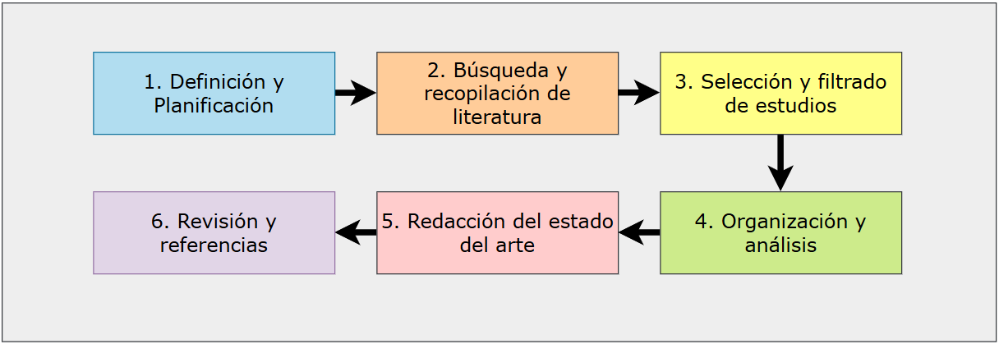

Estado del Arte
El estado del arte es un pilar fundamental en cualquier investigación científica, ya que permite situar el trabajo propio dentro del contexto del conocimiento existente. Su función principal es demostrar que el investigador comprende el campo, identifica los avances, reconoce los vacíos y justifica la relevancia de su propuesta. En áreas como la ingeniería en telecomunicaciones, donde la tecnología y los enfoques evolucionan rápidamente, un estado del arte riguroso asegura que la investigación sea pertinente, novedosa y alineada con los estándares internacionales.
¿Por qué es importante?
- Contextualiza la investigación: Permite entender cómo el problema abordado se relaciona con desarrollos previos y actuales.
- Evita duplicidad: Ayuda a no repetir trabajos ya realizados y a identificar oportunidades de innovación.
- Identifica vacíos y tendencias: Señala áreas poco exploradas o en debate, orientando la investigación hacia aportes significativos.
- Justifica la metodología: Permite seleccionar métodos y enfoques validados por la comunidad científica.
- Aporta credibilidad: Un buen estado del arte respalda la solidez y originalidad del trabajo ante la comunidad académica.
Mapa: Camino para Elaborar el Estado del Arte en un Paper Científico

Figura 1: Mapa para elaborar el estado del arte en un paper científico
1. Definición y planificación
- Formular preguntas de investigación claras y específicas (por ejemplo, usando el marco PICOC: Población, Intervención, Comparación, Resultados, Contexto).
- Delimitar el alcance temático y temporal de la revisión.
2. Búsqueda y recopilación de literatura
- Seleccionar bases de datos y fuentes relevantes (IEEE Xplore, ACM Digital Library, Scopus, Web of Science, etc.).
- Definir términos de búsqueda y combinaciones lógicas (sinónimos, palabras clave, operadores booleanos).
- Consultar expertos y revisar referencias de artículos clave.
3. Selección y filtrado de estudios
- Eliminar duplicados y versiones repetidas.
- Aplicar criterios de inclusión/exclusión (año, idioma, tipo de publicación, relevancia).
- Evaluar la calidad metodológica de los estudios (claridad de objetivos, justificación de métodos, reproducibilidad, análisis de resultados, etc.).
Criterios de calidad para la evaluación de estudios
Se recomienda clasificar cada estudio según los siguientes criterios:
- ¿El objetivo de la investigación está claramente definido?
- ¿El estudio se contextualiza respecto a investigaciones previas?
- ¿Las decisiones de diseño del sistema o algoritmo están justificadas?
- ¿El conjunto de datos de prueba es reproducible?
- ¿El algoritmo es reproducible?
- ¿El procedimiento experimental está claramente explicado y es reproducible?
- ¿Se especifica con qué otros algoritmos se compara el propuesto?
- ¿Se explican y justifican las métricas de desempeño?
- ¿Los resultados de las pruebas están analizados en profundidad?
- ¿La evidencia experimental respalda las conclusiones?
Cada criterio puede puntuarse como sí (1 punto), parcialmente (0,5 puntos) o no (0 puntos). El protocolo debe definir el umbral mínimo de calidad para aceptar un estudio y si es aceptable obtener cero puntos en algún criterio.
4. Organización y análisis
- Agrupar la literatura por enfoques temáticos, metodológicos, cronológicos o teóricos.
- Identificar patrones, tendencias, controversias y vacíos en la literatura.
- Comparar y sintetizar hallazgos relevantes.
- Realizar un mapa de citaciones o de autores más citados: analizar las referencias cruzadas entre los papers revisados para identificar qué trabajos o autores son más influyentes y cómo se relacionan entre sí. Esto ayuda a visualizar la estructura del campo y a detectar los referentes clave en el área de estudio.
5. Redacción del estado del arte
- Introducción: Presentar el tema, justificar la revisión y explicar el criterio de selección.
- Cuerpo: Desarrollar el análisis agrupado, resaltando avances, debates y limitaciones.
- Conclusión: Resumir los aportes principales, señalar vacíos y proponer líneas futuras de investigación.
6. Revisión y referencias
- Revisar la coherencia, claridad y estructura del texto.
- Citar correctamente todas las fuentes utilizadas, siguiendo normas académicas.
Herramientas recomendadas
Gestores de referencias
-
Zotero (Open Source): Gestor de referencias bibliográficas que permite recolectar, organizar, citar y compartir fuentes de investigación. Incluye plugins para navegadores y procesadores de texto.
-
JabRef (Open Source): Gestor de referencias bibliográficas especializado en archivos BibTeX, ideal para usuarios de LaTeX. Permite organizar y buscar referencias de manera eficiente.
Herramientas de análisis bibliométrico
-
VosViewer (de pago): Software para construir y visualizar redes bibliométricas. Permite analizar patrones de colaboración, co-citación y co-ocurrencia de términos.
-
VOSviewer-Online (versión web de VosViewer, Open Source): Versión web de VosViewer que permite realizar análisis bibliométricos directamente desde el navegador. Esta herramienta puede ser utilizada como alternativa para la creación de mapas de citaciones, considerando que VosViewer es una herramienta de pago. Se puede adaptar para casos de uso específicos mediante la implementación de scripts en Python, aprovechando su naturaleza de código abierto.
Plataformas para gestión de revisiones sistemáticas
- Parsif.al (uso libre): Plataforma web para gestionar revisiones sistemáticas de literatura. Facilita la planificación, ejecución y documentación de revisiones sistemáticas siguiendo metodologías estandarizadas.
Herramientas de IA para investigación
-
Consensus (de pago): Plataforma que utiliza IA para analizar y sintetizar hallazgos científicos, ayudando a encontrar respuestas basadas en evidencia en la literatura científica.
-
Elicit (de pago): Herramienta de IA que automatiza partes del proceso de revisión de literatura, ayudando a encontrar, resumir y analizar papers relevantes.
-
Scite (de pago): Plataforma que utiliza IA para analizar cómo los artículos científicos son citados, proporcionando contexto sobre si los hallazgos son apoyados o refutados por investigaciones posteriores.
-
SciSpace (de pago): Plataforma que combina IA y análisis de literatura científica para ayudar a los investigadores a encontrar, leer y comprender papers relevantes de manera más eficiente.
-
Research Rabbit (uso libre): Herramienta que utiliza IA para descubrir y visualizar conexiones entre papers científicos, ayudando a mapear el panorama de la investigación en un campo específico.
Referencias
- Literature Review University of Edinburgh
- The Literature Review: A Few Tips On Conducting It University of Wisconsin-Madison
- Literature Reviews University of North Carolina at Chapel Hill
- Literature Review University of Arizona Libraries
- Language Models are Few-Shot Learners
- BERT: Pre-training of Deep Bidirectional Transformers for Language Understanding
- Google Scholar
- IEEE Xplore
- ACM Digital Library
- ScienceDirect
- SpringerLink